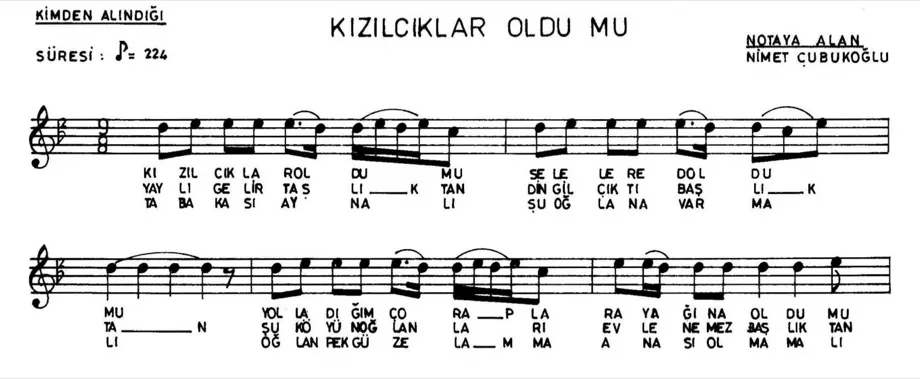

Sahne Modu
Sahneye çıkınca tek dokunuşla Sahne Modu'na geç. Ekranda yalnızca çaldığın eser ve sıradaki kalır: büyük, okunaklı, dikkat dağıtmayan.
- Söz, akor ya da nota: tek dokunuşla geç
- Sahnede tonu değiştir: ± yarım ton
- Gece/gündüz teması, yazı boyutu, hiza
- Pedalla ya da kaydırarak geç; notada sayfa çevirir
- Ekran kararmaz, internetsiz de çalışır
- Liste değişirse haber verir, altından kaymaz
0
Kızılcıklar Oldu mu? Uşşak · La · 9/8
Kızılcıklar oldu mu selelere doldu mu hey
Gönderdiğim çoraplar ayağına oldu mu
Mendili eline mendili verdim geline
Kara kına yollamış yar benim ellerime

SıradakiFındık Toplayan KızlarUşşak · La · 9/8